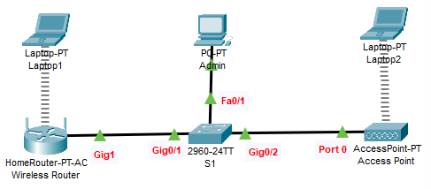

AIM
- Connect to the Wireless Router Web Interface
- Configure Wireless Security Settings
- Connect Laptop to Wireless Router
- Configure the Access Point
- Connect Laptop to Access Point
TOPOLOGY

ADDRESSING TABLE
| Device |
Interface |
IP Address |
Subnet Mask |
| Wireless Router |
Router IP |
192.168.0.1 |
255.255.255.0 |
| Admin |
NIC |
DHCP |
| Laptop1 |
NIC |
DHCP |
| Laptop2 |
NIC |
DHCP |
CONFIGURATION STEPS
Configure Admin PC to get IP Address from DHCP
Click Admin → Desktop → IP Configuration → DHCP
CONNECT TO THE WIRELESS ROUTER WEB INTERFACE.
- Click on Admin PC
- In the Desktop tab on Admin, choose Web Browser.
- Enter 192.168.0.1 in the URL field to open the web configuration page of the wireless router.
- Use admin for both the username and password.
CONFIGURE THE WIRELESS SETTINGS
- Navigate to Wireless > Basic Wireless Settings.
- Change Network Name (SSID) to CP08 for only 2.4 GHz.
- Change the Standard Channel to 6 - 2.437GHz.
- Disable both 5 GHz frequencies. Leave the rest of the settings unchanged.
- Scroll to the bottom of the window and click Save Settings.
CONFIGURE WIRELESS SECURITY SETTINGS.
- In this step, you configure the wireless security settings using WPA2 security mode with encryption and passphrase.
- Navigate to Wireless→Wireless Security.
- Under the 2.4 GHz heading, select WPA2 Personal for the Security Mode.
- For the Encryption field, keep the default AES setting.
- In the Passphrase field, enter Cisco123 as the passphrase.
- Click Save Settings.
CONNECT LAPTOP1 TO WIRELESS ROUTER
- Open Laptop1, in the physical tab, switch off Laptop and remove Fast Ethernet Interface Card and insert the Linksys-WPC300N module, then switch on the Laptop
- Select Desktop tab and Click PC Wireless.
- Select the Connect tab. Click Refresh as necessary. Select the Wireless Network Name CP08.
- Enter the passphrase configured in the previous step. Enter Cisco123 In the pre-shared key field and click Connect. Close the PC Wireless window.
CONFIGURE THE ACCESS POINT.
- Click Access Point. Select the Config tab.
- Under the INTERFACE heading, select Port 1.
- In the SSID field, enter CP15.
- Select WPA2-PSK. Enter the passphrase Cisco123 in the Pass Phrase field.
- Keep AES as the default Encryption Type.
- Close the Access Point Window
CONNECT LAPTOP2 TO ACCESS POINT
- Open Laptop2, in the physical tab, switch off Laptop and remove Fast Ethernet Interface Card and insert the Linksys-WPC300N module, then switch on the Laptop
- Select Desktop tab and Click PC Wireless.
- Select the Connect tab. Click Refresh as necessary. Select the Wireless Network Name CP15.
- Enter the passphrase configured in the previous step. Enter Cisco123 In the pre-shared key field and click Connect. Close the Laptop Wireless window.
RESULT:
Configured and verified a Wired and Wireless LAN